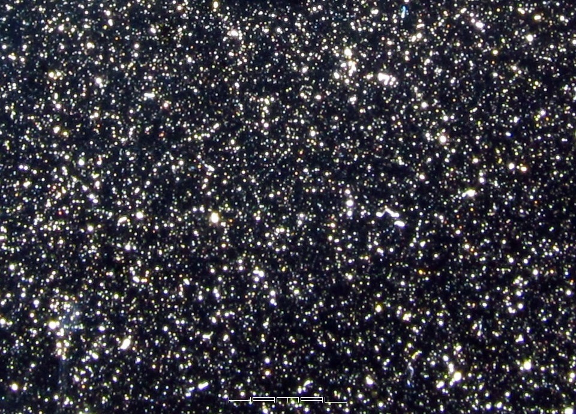
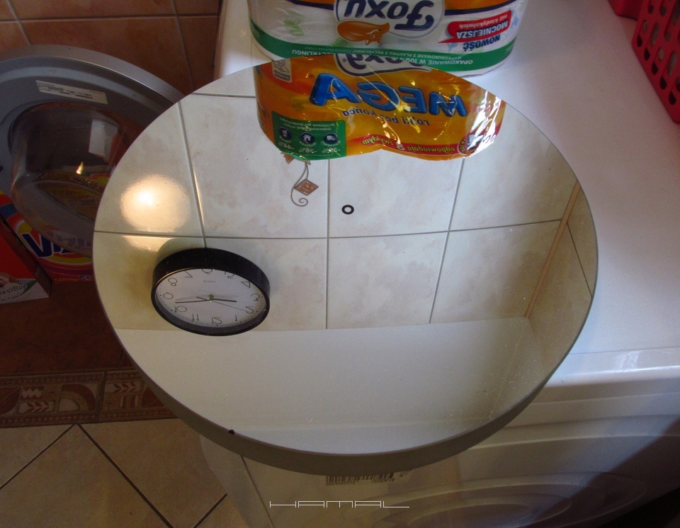
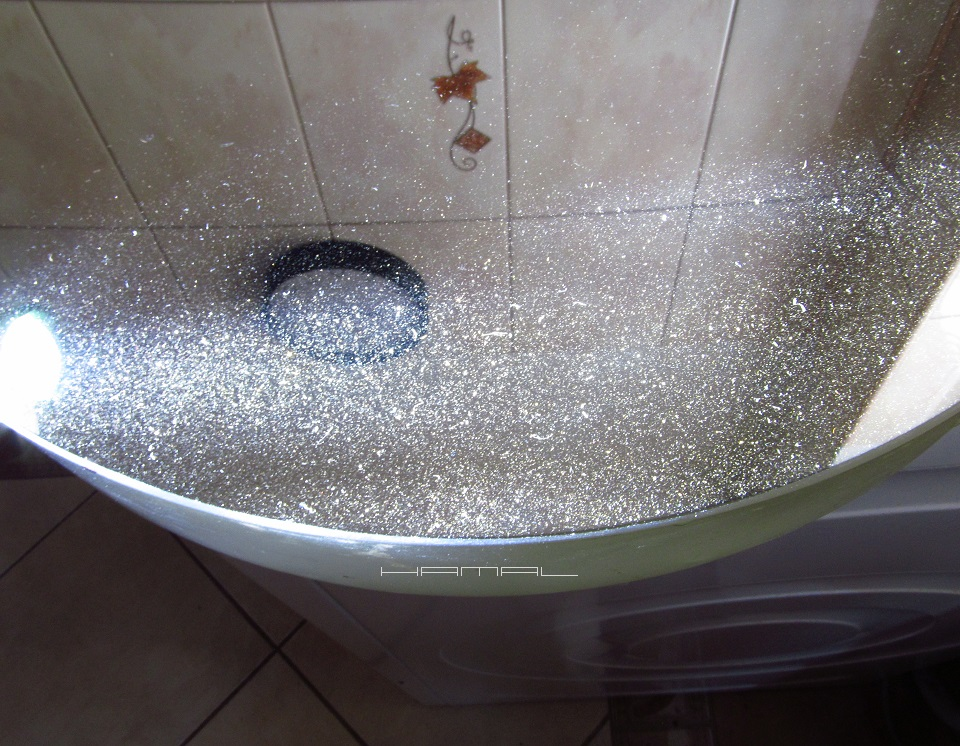
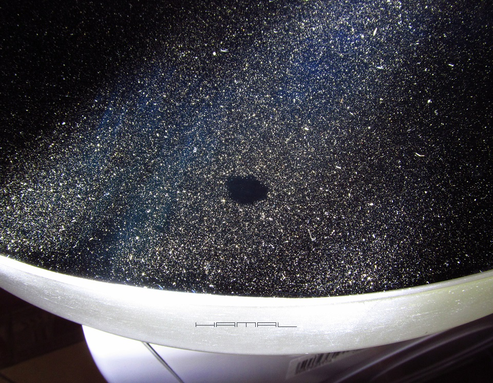
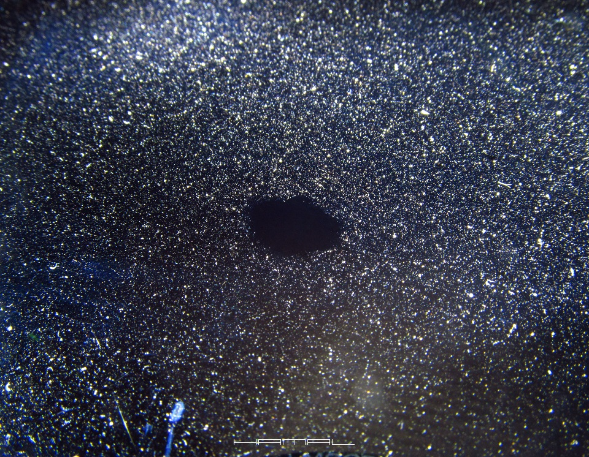
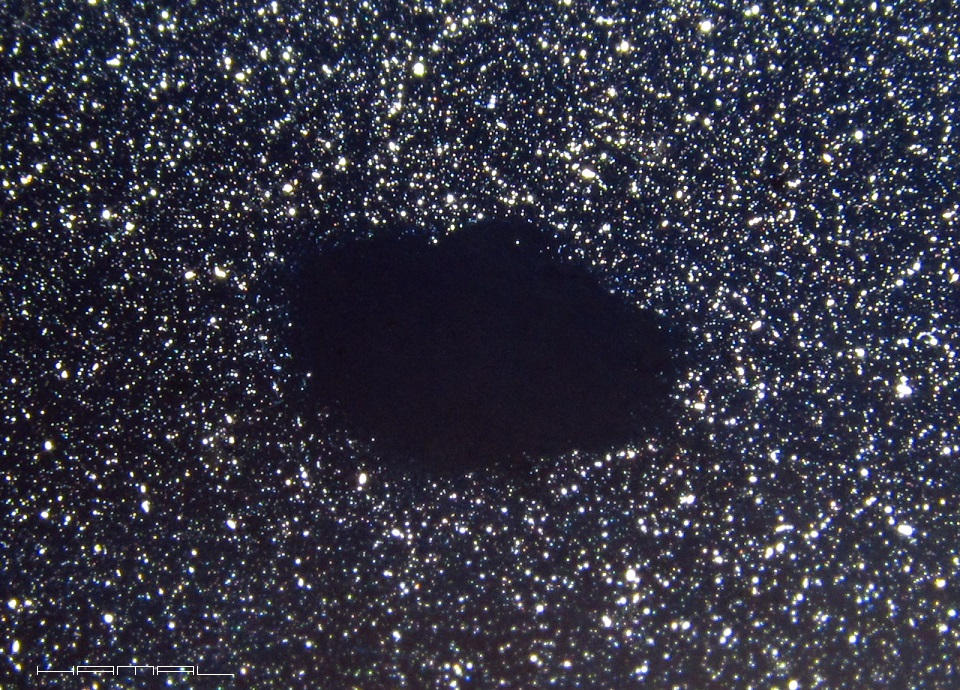
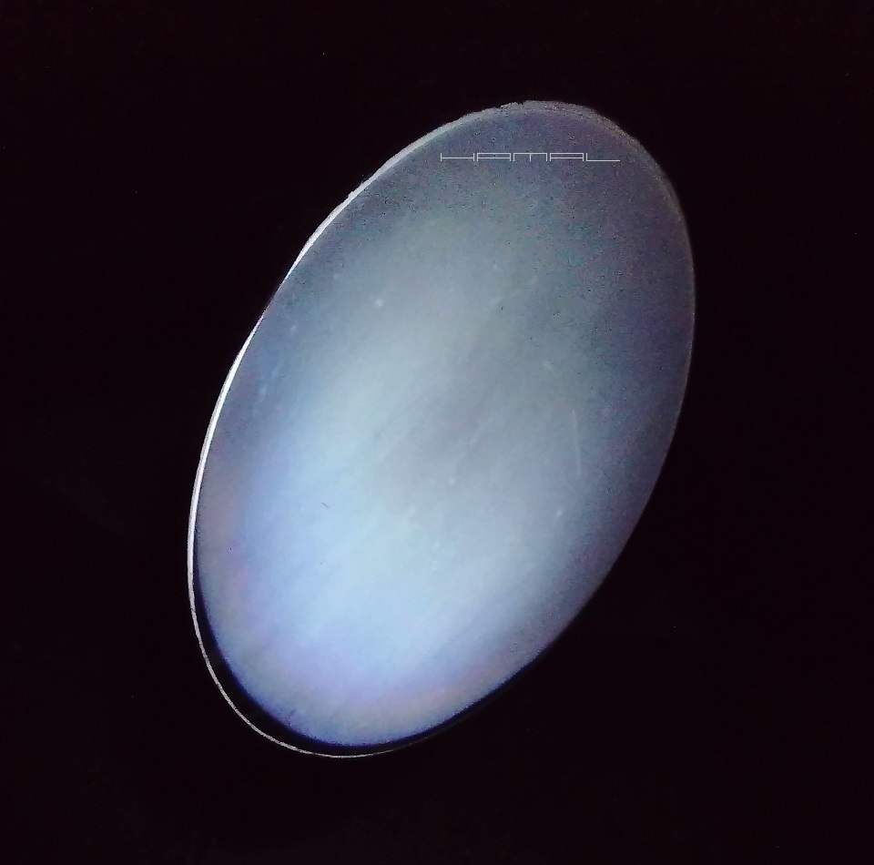
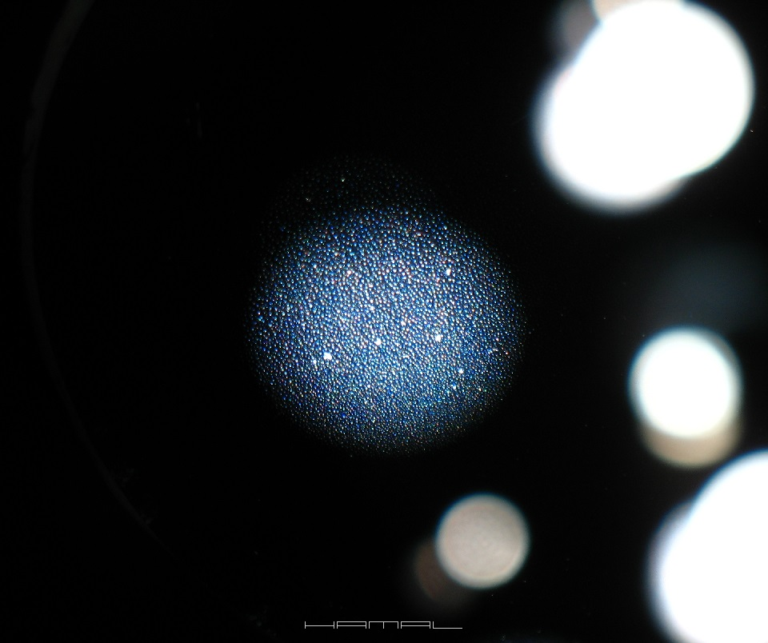
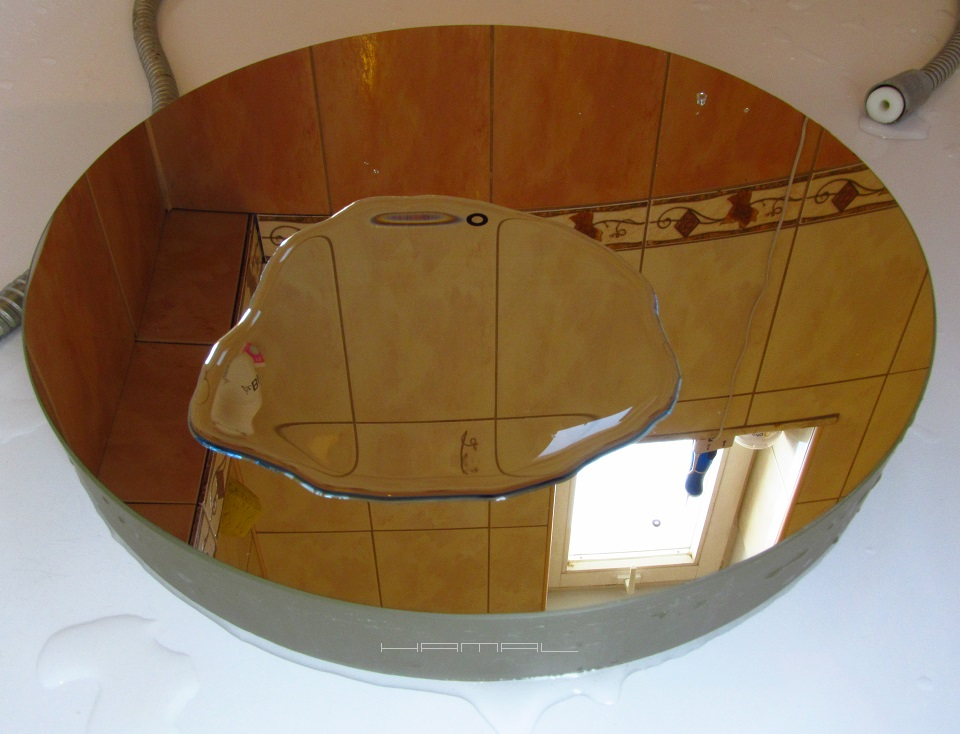
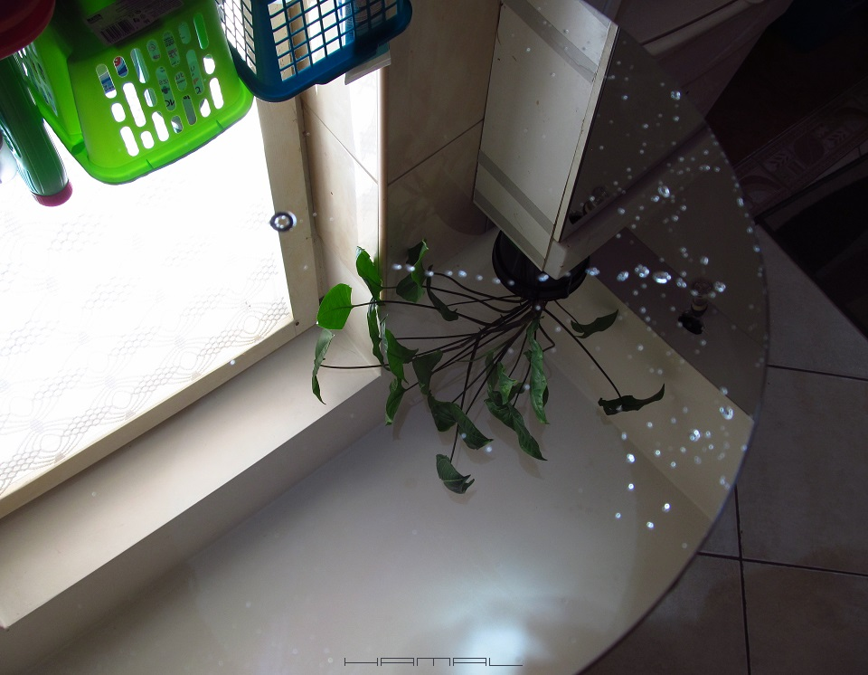

|
"My God, it's full of stars"
 W kosmosie występuje wiele dziwnych obiektów ...  - Zapewne jest to Barnard 68 ! Foton przemierzał kosmos miliard lat, mając w głowie jeden cel, stać się częścią czegoś doniosłego! :D Mógł trafić w źdźbło trawy obok naszego teleskopu, ale on postanowił odbić się od jego zwierciadeł i trafić na nasz sensor obrazujący, aby stać się cegiełką obrazu potężnej odległej galaktyki. :) . Chcesz osiągnąć wyniki, stań się fotonem, zawsze powtarzam. Odbądź z nim drogę od wlotu tuby teleskopu aż do sensora kamery, podumaj i poszukaj, co może mu zaszkodzić. - W czym problem? Zapytacie. Foton wpada do teleskopu, odbija się od zwierciadeł i kieruje się do sensora! Odbija się od zwierciadeł, teoretycznie tak, ale trafiając w zwierciadło, musi trafić w zwierciadło, a nie brud. - Przecież to zwierciadło główne teleskopu wydaje się być czyste! .  Wydaje się być czyste, ale gdy poświecimy na nie skrajnym światłem, sprawa nie wydaje się być już tak oczywista. .  Jeszcze gorzej to wygląda, gdy oczyścić dla przykładu mały fragment. .  Więc ... będąc fotonem, który przemierzał miliony lat kosmos, który mógł trafić w źdźbło trawy obok naszego teleskopu, który postanowił odbić się od jego zwierciadeł i trafić na nasz sensor obrazujący, aby stać się cegiełką obrazu potężnej odległej galaktyki, chciałbyś, będąc tak blisko trafić w brud? .  Enklawa czystości niczym ciemna mgławica na tle roju gwiazd. .  Sporo tu możliwości trafienia w coś pochłaniającego fotony. :( .  Nie myśl, że to już koniec opowieści. :D Jesteś fotonem, miałeś fart, trafiłeś w ten czysty fragment zwierciadła głównego i lecisz sobie do zwierciadła wtórnego. :D A tam ... Za każdym razem, gdy przynosicie sprzęt do domu i na zwierciadle wtórnym pojawi się rosa w wyniku różnicy temperatur, dzieje się coś niedobrego. .  - Przecież, gdy rosa zniknie, to zwierciadło wtórne pozostaje czyste! Prawda? Niestety nie. W skrajnym oświetleniu jego powierzchnia wygląda następująco. Rosa, wysychając pozostawiła po sobie siatkę nieczystości i osadu. .  Będąc fotonem, działając w nano skali, masz spore wymagania co do warunków pracy. :) Stan zwierciadła wtórnego jest o wiele ważniejszy niż stan zwierciadła głównego, ponieważ ono jest jakby zagęszczeniem rozmiaru zwierciadła głównego. Jeśli zwierciadło główne ma wymiar 30cm a zwierciadło wtórne ma wymiar 5 cm, to każdy pyłek na zwierciadle wtórnym o wymiarach 5mm odnosi się do pyłku na zwierciadle głównym o wymiarach aż 3cm, ponieważ zwierciadło wtórne jest 6x mniejsze, ale zawiera na swojej powierzchni ściśniętą powierzchnię 6x większego zwierciadła głównego. Każdy więc pyłek na zwierciadle wtórnym o wymiarach 1mm to plama na zwierciadle głównym o wymiarach 6mm. Mając jedną plamę na zwierciadle głównym o rozmiarze 6mm, byście nie mogli spać, mając ich wiele, macie skraj zawału, ale mając kilka pyłków 1mm na zwierciadle wtórnym, jesteście wyluzowani. Ciekawe prawda? - Jaka rada? Chcąc osiągać maksymalne wyniki i unikać niecelowej dyfrakcji, generować obrazy z maksymalnym kontrastem, niestety, należy zwierciadła teleskopu utrzymywać w optymalnej czystości. Ja zwierciadło główne czyszczę zależnie od potrzeb, a zwierciadło wtórne przed każdą sesją, jeśli uprzednio zaparowało. Nie jest celem przewodnim niniejszego opisu, wskazywać sposób czyszczenia optyki teleskopu, lecz uzmysłowienie takiej konieczności. Znane są na forach przechwałki osób, które latami optyki nie dotykały i różnicy w obrazie nie widzą. Gotowana powoli żaba różnicy w temperaturze wody też nie widzi, co nie zmienia faktu ... :) Zresztą, co innego gapienie się wizualne w czasach Uniwersała, a co innego astrofotografia CMOS dziś. Napiszę w telegraficznym skrócie, jak ja to robię, bo poradników na ten temat trylion w sieci. CZYSZCZENIE ZWIERCIADŁA WTÓRNEGO Potrzebne nam będą: . - Płatki kosmetyczne - Alkohol izopropylowy - dobrze rozpuszcza przyschnięty rosą brud, ale lubi pozostawiać smugi. - Benzyna ekstrakcyjna - doskonale czyści tłuszcz i pozostawione przez alkohol izopropylowy smugi. Będą trzy rundy. 1. Pierwsze przetarcie wykonujemy płatkiem kosmetycznym nasączonym alkocholem izopropylowym. 2. Drugie przetarcie wykonujemy płatkiem kosmetycznym nasączonym alkocholem izopropylowym razem z benzyną ekstrakcyjną. 3. Trzecie przetarcie wykonujemy płatkiem kosmetycznym nasączonym benzyną ekstrakcyjną. Gotowe. Jeśli czynności wykonaliście prawidłowo, to zwierciadło wtórne oświetlone mocną latarką nie posiada smug. CZYSZCZENIE ZWIERCIADŁA GŁÓWNEGO Ja do tego celu używam szamponu MICELARNEGO NIVEA. Kładziemy zwierciadło w wannie na czystej szmatce i polewamy wodą celem odmoczenia osadu. Po odkręceniu słuchawki prysznica tworzymy mocny strumień, który ciśnieniem oderwie oporny osad. W następnej kolejności delikatnie opuszkami dłoni, z użyciem szamponu myjemy powłokę. Następnie obficie spłukujemy wodą. .  Na sam koniec stawiamy zwierciadło na brzegu na szmatce, która spełnia ważne zadanie, mianowicie, polepsza odbiór spływającej wody, i polewamy wąskim strumieniem z prysznica, aż do uzyskania powierzchni bez kropel wody. Wyciągamy z wanny, wycieramy brzegi i tył. Gotowe. Jeśli zwierciadło nie jest ani za ciepłe, ani za zimne, a Wy użyjecie wody, ani za ciepłej, ani nie za zimnej, to uzyskacie taki efekt, że woda ze zwierciadła będzie uciekać sama, więc po jego umyciu, nie będzie trzeba go osuszać, gdyż woda spłynęła i jest suche. Patrz film poniżej. Jeśli pozostaną jakieś krople, można je zebrać rogiem chusteczki higienicznej. Nie męczcie powłoki do nie wiadomo jak idealnej czystości. Jedna noc pod niebem więcej zaszkodzi niż pozostałe po czyszczeniu smugi. .  Jeszcze tylko DIAVS i możesz zacząć korzystać z pełni możliwości rozdzielczej optyki na DS, ale to już inna opowieść :)
MOGĄ CIĘ ZAINTERESOWAĆ RÓWNIEŻ


|